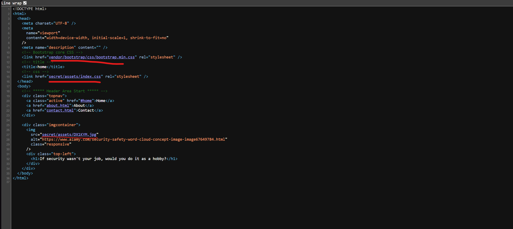
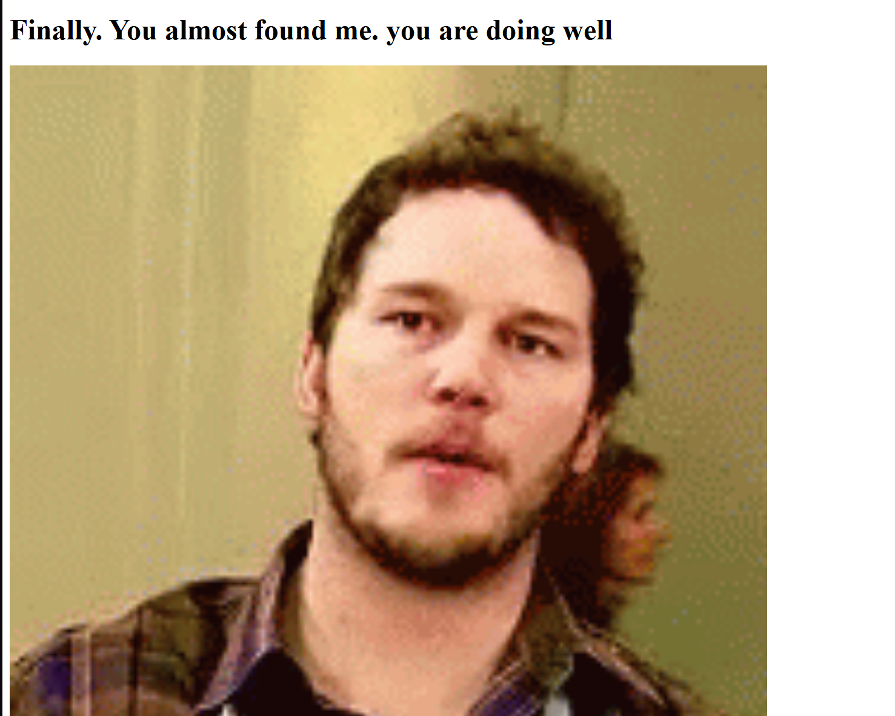
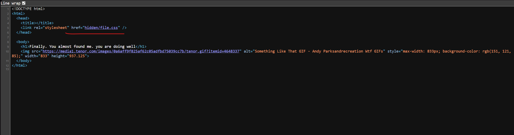
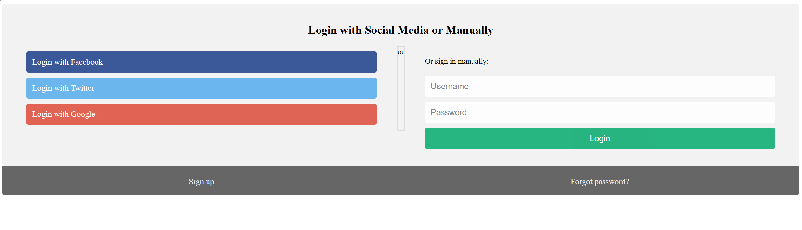
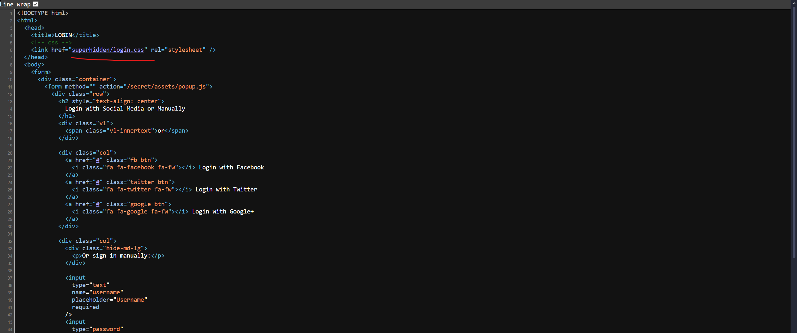
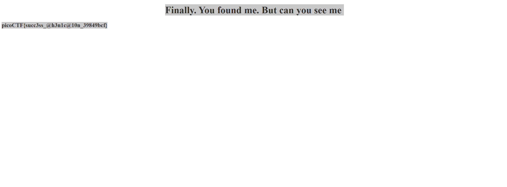
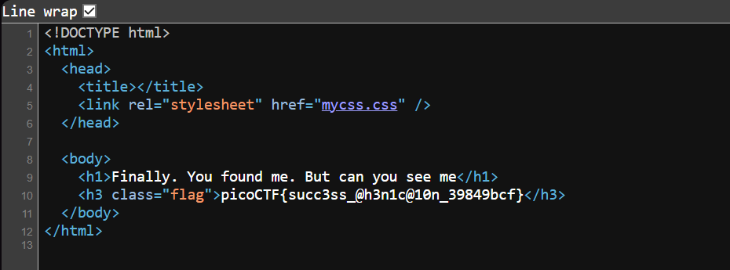

Secrets (Medium)
- Challenge Link: https://play.picoctf.org/practice/challenge/296?category=1&difficulty=2&page=2
- Challenge Description: We have several pages hidden. Can you find the one with the flag?
Solution
Since it mentioned several hidden pages, first thing I did was check the robots.txt, unfortuantely, there was nothing so we have to do something else. Which means we need to use the inspect element to find anything hidden folders/directories we can traverse to find the flag.
Directories/folders are essentially containers used to organize and store files on a server. These can include things like:
- HTML files (the content of the web pages)
- CSS files (for styling)
- JavaScript files (for dynamic behavior)
- Images (like logos, banners, etc.)
- Configuration files (settings for the server, databases, etc.) Websites are usually organized in a tree like structure, where the main folder is the "root" directory, and inside it, there are other folders and files. For example:
/ (root directory) /index.html (main webpage) /about.html (another webpage) /assets/ (folder containing images, CSS, JavaScript) /hidden/ (a folder that might be used for storing sensitive stuff)
Sometimes, websites or servers contain "hidden" directories or files that aren't easily accessible to regular users.
Front Page:
With that in mind, by using inspect element, we see that there are some folders that we can try to access.
Vendor doesn't seem that important however the 'secret' folder might be important. Let's check:
http://saturn.picoctf.net:54497/secret/
Let's check again using inspect element or viewing page source, there is another hidden folder called 'hidden':
Let's check:
http://saturn.picoctf.net:54497/secret/hidden/
Let's check the page source again:
Let's try the superhidden folder:
http://saturn.picoctf.net:54497/secret/hidden/superhidden/
This is our flag, but since the text color is the same as the background (white), a neat trick is to select all (Ctrl A), inspect element, or view page source to see our flag:
picoCTF{succ3ss_@h3n1c@10n_39849bcf}


Sources
- N/A